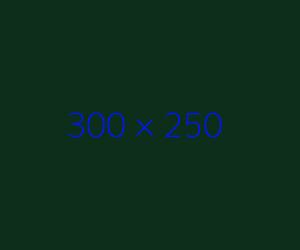
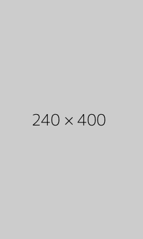

Vegan Chinese noodlesMega Veggie burgersRoasted game bird pie
Get inspired
HAND-PICKED BITS & BITES
A fresh,zingy dinner for twoSharpen your skills at the Jamie Oliver Cookery SchoolHow to get your vitamins and mineralsWhat are the benefits of wholegram?Whip up a special pud in less than an hourBuy Jamie's book now!

More to explore
TOP FEATURE & VIDEOS
How ro Replace Gluten in BakingDIY kids party foodLamb & Chickpea CurryHow to make your own fish fingers
Chicken with homemade guacamole & salsaFennel crab & orange saladHow to make your own fish fingersHow to make your own fish fingersHow to make your own fish fingersHow to make your own fish fingersHow to make your own fish fingersHow to make your own fish fingersHow to make your own fish fingersHow to make your own fish fingersHow to make your own fish fingersHow to make your own fish fingersHow to make your own fish fingersHow to make your own fish fingersHow to make your own fish fingers